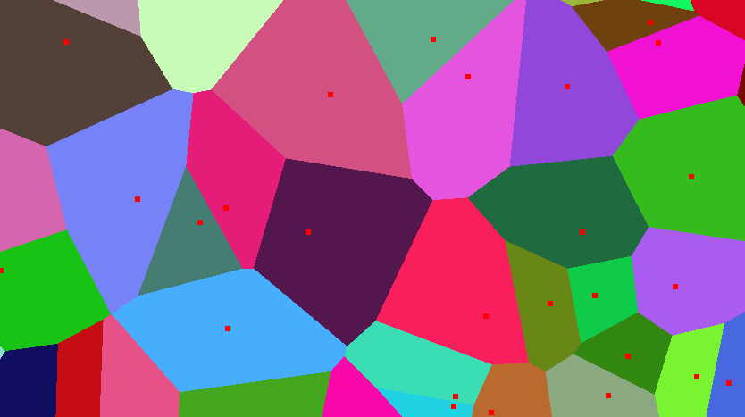

Brute forcing Voronoi diagrams
What is a Voronoi diagram
A Voronoi diagram is a partition of a plane into regions close to each of a given set of objects. Simply put, each point in the plane is included into the object it is closest to. For example, take a look at the following image:
Each object is represented with a small red square. Note how each color represents the points that are included in a certain region. While Voronoi diagrams have a lot of real life uses, they're also used in computer graphics. Unfortunately, the efficient algorithm for rendering Voronoi diagrams is quite complex, so we're going to explore a rather 'brute-force' approach.
Rendering Voronoi diagrams on the CPU
This approach is pretty straightforward: we are going to iterate over each point on the plane and calcutate the distances to all objects. The point is going to be included in the region with the minimum distance. I'm going to write the code in c++ and use SFML for the graphics. Let's skip the boilerplate code and get straight to action (the project repo is linked at the bottom of the page).
// Voronoi.hpp
struct Point
{
sf::Vector2u position;
sf::Color color;
};
std::vector<Point> points; // The objects of our Voronoi diagram (point = object)
sf::VertexArray point_vertices; // Used to batch-draw all the objects
sf::VertexArray map_vertices; // Used to batch-draw the entire plane
With that done, let's get to the implementation. First, we're going to initialize the map vertices containing each point in the window.
void Voronoi::setupMap()
{
this->map_vertices.setPrimitiveType(sf::PrimitiveType::Points);
this->map_vertices.resize(static_cast<std::vector<unsigned int>::size_type>>
(this->win.getSize().x) * this->win.getSize().y);
}
The objects are going to be placed randomly. Let's take a look at the code that generates the diagram:
float Voronoi::squaredDistance(const sf::Vector2f a, const sf::Vector2f b)
{
return (b.x - a.x) * (b.x - a.x) + (b.y - a.y) * (b.y - a.y);
}
void Voronoi::processVoronoi()
{
unsigned int k;
float distance{};
float min_distance{};
sf::Color min_color{};
unsigned int i, j;
for (i = 0; i < this->win.getSize().x ; i++)
{
for (j = 0; j < this->win.getSize().y; j++)
{
k = i * this->win.getSize().y + j;
this->map_vertices[k].position = sf::Vector2f{ static_cast<float>(i), static_cast<float>(j) };
min_distance = INFINITY;
for (const auto& point : this->points)
{
distance = squaredDistance(this->map_vertices[k].position, static_cast<sf::Vector2f>(point.position));
if (distance < min_distance)
{
min_distance = distance;
min_color = point.color;
}
}
this->map_vertices[k].color = min_color;
}
}
}
Our work is done, we can draw our first Voronoi diagram. Sadly, this approach is really slow:
Multithreaded Voronoi diagram
I paid for the whole CPU, I'm going to use the whole CPU! Let's throw some threads at it! We are going to split the screen into vertical, equal regions and process them separately. Let's revisit our process function:
void Voronoi::processVoronoi(unsigned int c_thread)
// c_thread = current thread number (for example), c_thread could be between 0 and 7
{
auto column_length = this->win.getSize().x / this->thread_count;
if (this->thread_count * column_length < this->win.getSize().x)
column_length++;
unsigned int k;
float distance{};
float min_distance{};
sf::Color min_color{};
unsigned int i, j;
for (i = c_thread * column_length; i < (c_thread + 1) * column_length; i++)
{
// Nothing is changed here
// [...]
}
this->finished[c_thread] = true; // finished is a bool array.
}
Now let's call the function:
void Voronoi::setupMap()
{
this->map_vertices.setPrimitiveType(sf::PrimitiveType::Points);
this->map_vertices.resize(static_cast<std::vector<unsigned int>::size_type>
(this->win.getSize().x) * this->win.getSize().y);
for (unsigned int i = 0; i < this->thread_count; i++)
this->threads[i] = std::thread{ &Voronoi::processVoronoiCPU, this, i };
}
This is what we get:
I'm only using 4 threads because I couldn't capture the video with my CPU being at 100%, but using 'std::hardware_concurrency()' should be fine. While we almost halved the processing time, we can still do better (in terms of 'brute-force'). What hardware component is extremely good at doing parallel tasks? That's right, the GPU.
Rendering Voronoi diagrams on the GPU
Let's write a simple glsl shader:
#define POINT_COUNT 400
uniform vec2 u_point_position[POINT_COUNT];
uniform vec3 u_point_color[POINT_COUNT];
void squaredDistance(in vec2 a, in vec2 b, out float distance)
{
distance = (b.x - a.x) * (b.x - a.x) + (b.y - a.y) * (b.y - a.y);
}
void main()
{
vec2 position = gl_FragCoord.xy - vec2(0.5, 0.5);
float min = 999999.0;
float distance;
vec3 min_color;
for (int i = 0; i < POINT_COUNT; i++)
{
squaredDistance(position, u_point_position[i], distance);
if (distance < min)
{
min = distance;
min_color = u_point_color[i];
}
}
gl_FragColor = vec4(min_color.x, min_color.y, min_color.z, 1.0);
}
We are doing pretty much the same thing, but on the GPU. The array of objects is passed to the shader using uniform arrays, which is not ideal (there's a size limit), but works alright in our case. Setting up the shader is quite easy:
void Voronoi::setupMapGPU()
{
this->render_texture.create(this->win.getSize().x, this->win.getSize().y);
if (!this->shader.loadFromFile("src/shader.glsl", sf::Shader::Fragment))
exit(EXIT_FAILURE);
sf::Vector2f point_position[POINT_COUNT];
sf::Vector3f point_color[POINT_COUNT];
for (unsigned int i = 0; i < POINT_COUNT; i++)
{
point_position[i] = sf::Vector2f{ this->points[i].position };
// glsl uses [0, 1] range colors, so we need to do a conversion
point_color[i].x = static_cast<float>(this->points[i].color.r) / 255.f;
point_color[i].y = static_cast<float>(this->points[i].color.g) / 255.f;
point_color[i].z = static_cast<float>(this->points[i].color.b) / 255.f;
}
this->shader.setUniformArray("u_point_position", point_position, POINT_COUNT);
this->shader.setUniformArray("u_point_color", point_color, POINT_COUNT);
// Draw the diagram on a texture
this->sprite.setTexture(this->render_texture.getTexture());
this->present_texture.create(this->win.getSize().x, this->win.getSize().y);
this->present_texture.draw(this->sprite, &this->shader);
this->present_texture.display();
}
Unfortunately, I can't make a video of the diagram being created on the GPU, but here's the time: about a second. I'm using an integrated GPU, so the difference should be even more noticeable on a dedicated GPU. It should be pretty fast for a small number of objects and a smaller screen size.